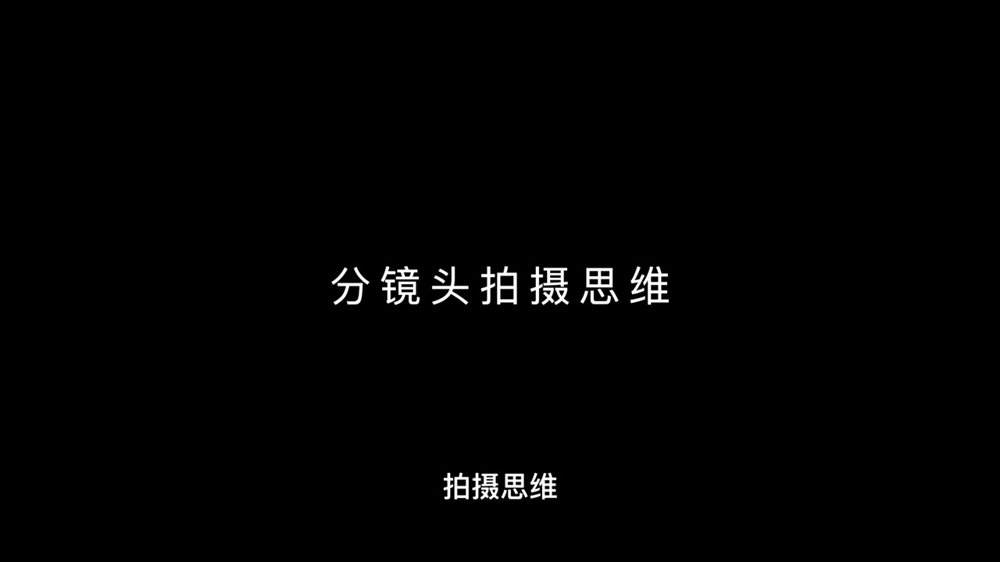
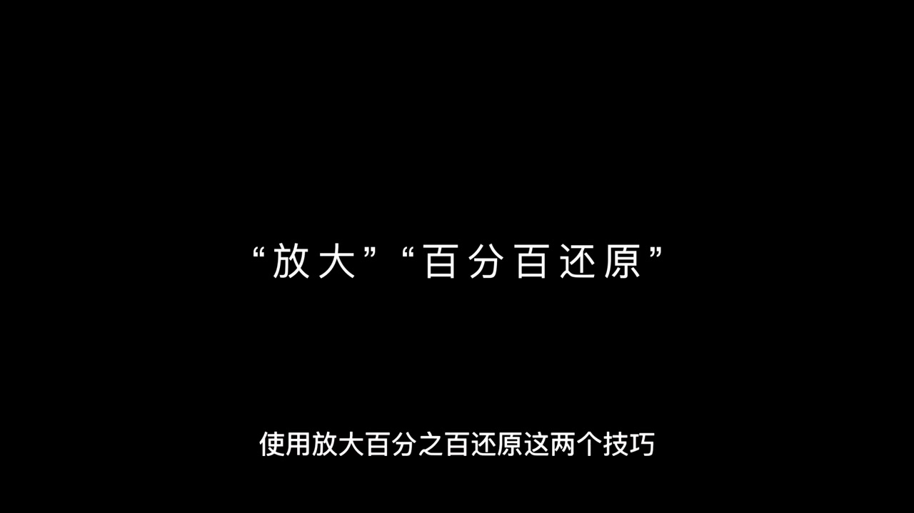
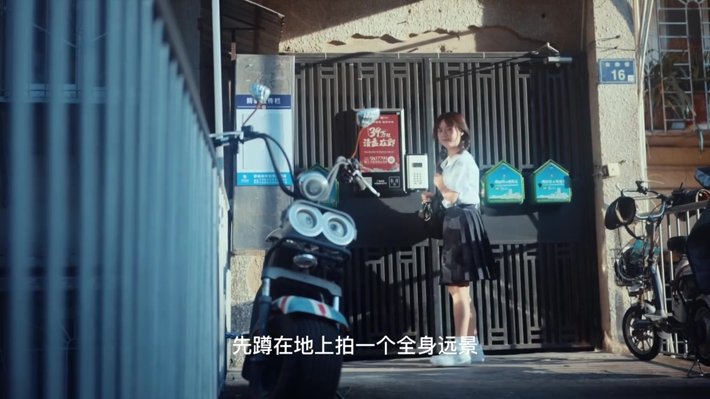

开场：电影感短片「拢共分几步」
黑底上先甩出梗图：歪眼哈士奇摊手，字幕问「要拍出一定电影感的短片拢共分几步」。UP 自己接梗——答案大一点，就一步：把文字语言转化成镜头语言；这一大步通常要靠分镜头脚本来辅助完成。
画面字幕：「要拍出一定电影感的短片拢共分几步」
说明：Whisper 把「拢共」识成「楼共」、把「难不难／答案」类口播识成「南部自卖」等。下文叙述以可见字幕与画面为准；页面末尾仍完整保留全部 Whisper 分段。
不是教你画脚本，是养成分镜思维
假想观众立刻反驳：我就拍个短视频，难道还要去画分镜头脚本吗？UP 明确说「肯定不是」。他要教的是形成分镜头拍摄思维——在脑子里快速完成分镜规划。画面切到黑底标题卡「分镜头拍摄思维」。
口播大意：教的是怎么形成分镜头拍摄思维，在脑子里快速完成分镜头的规划。

两个技巧：放大，百分百还原
接下来用两个简单例子建立基本分镜思维。黑底大字打出「放大」「百分百还原」：用这两个技巧可以降低思考时间成本、提高拍摄效率，镜头数也比较充足。具体思路是——先确定把人物放在某个场景下做什么；先稍微远一点看他在干嘛，再凑近一点看他具体在干嘛。
画面字幕：「放大」「百分百还原」／「使用放大百分之百还原这两个技巧」

例子一：把「女生开心去上学」拍成两个画面
文字句是「女生开心的去上学」。镜头语言先蹲地拍一个全身远景：女生关门、转身、双手抓书包、笑着往前跑；再按「放大 + 百分百还原」，用中近景和稳定器跟一段一模一样的转身抓书包动作。画面里是校服女生在小区门禁前回头微笑，字幕正写着「先蹲在地上拍一个全身远景」。
画面字幕：「先蹲在地上拍一个全身远景」「用稳定器跟一段一模一样的转身」

插曲：门其实没被打开，靠动作延续性脑补
UP 补了一个拍摄小插曲：这个门其实并没有被他们打开，只是让演员假装关上门走掉。技巧在于动作的延续性——观众会自行脑补「她是关了门之后才走掉的」。这对短视频很实用：不必真拍完整开关门，也能让因果连上。
口播：这个门其实并没有被我们打开……通过动作的延续性，让观众自行脑补。
例子二：晾衣服——远近景、焦点与表情衔接
第二个例子是晾衣服。先拍拿着衣服走来、摊开、挂上晾衣绳的中近景全过程，焦点可以从人落到衣服；再用「放大 + 百分百还原」让女生重做动作，换更远景别再拍一次；接着补衣服随风飘扬、把焦点对在夹子上并把挂衣服动作虚化在背景里，以及整理衣服时人物表情的中景作衔接。成片串联后，就是一串有节奏的日常镜头。
画面字幕：「把衣服摊开挂在晾衣绳上的中间景」「再把焦点对在夹子上」
不止交代动作：再往艺术化走一步
基础交代动作做完后，UP 说自己更希望有艺术化处理，并并排放出两个画面让观众用五秒钟把描述打在公屏上——顺带训练镜头语言与文字语言的互转。倒计时 5、4、3、2、0 后收束。
画面字幕：「那就是这个画面和这个画面」「给大家5秒钟时间」
收束：分镜意识有眉目了吗
UP 问这两个例子是否让大家对培养分镜头意识稍微有点眉目；感兴趣的话可以去看这两组镜头做成的短片。片尾自我介绍：我是张恒，咱们下期再见。
整条视频的节奏是：先用梗降低门槛 → 否定「必须画脚本」→ 给出两个可复用技巧 → 用上学／晾衣服示范远近景与焦点分层 → 再用艺术化互动把训练闭环。